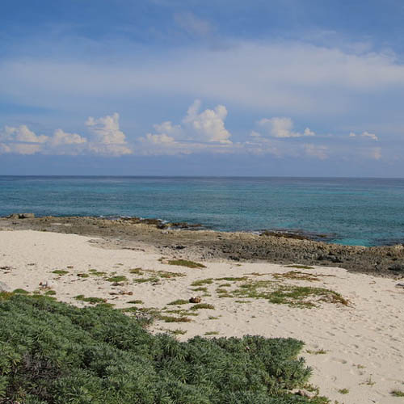
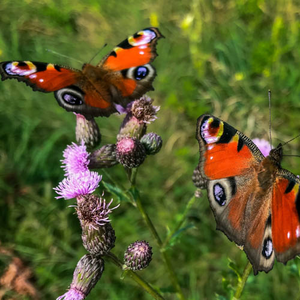

Punta Sur
Tour Punta Sur. It is the southernmost point of Cozumel and belongs to a large beautiful ecological park. There are reefs, lagoons, and plenty of sunshine. The Celarain lighthouse is a lovely feature, and it is near a nautical museum. There is also local Maya Temple that can be easily accessed. The beaches offer plenty of beautiful white sand, and if you come at the right time of year, you can see the sea turtles nesting. Many come to Punta Sur to scuba dive. It is a lovely place to tour with your Scoots Ride! Once in Punta Sur you can eat at the local food vendors. The tacos at Mario’s taco stand are known through out the region as being fantastic. Also, there are a few craftsmen native to the area who can create for you custom wood or leather work. Don’t forget to climb the lighthouse and see as far as you can. It is possible on a very clear day to see the mainland. Your Scoots Rental will perform wonderfully on the sandy beaches. We have selected each vehicle for its dexterity on the sands of the local beaches. We hope you find time to visit Punta Sur.
San Gervasio
Visit San Gervasio. The park is a wildlife refuge and has a large iguana population. Visit San Gervasio. The park is a wildlife refuge and has a large iguana population. The iguanas love tourists and are quite curious. It is fantastic to see them run across the sand in large numbers. They look like miniature dinosaurs. Another way to travel back in time is the ruins. Ancient ruins in San Gervasio are extensive and cover several square miles. Many types of ruins dating back to 600BC. These include buildings, alters, courtyards, and temples. You will not be disappointed if you spend a day touring San Gervasio in a cool airconditioned four-door Jeep from Scoots. There are many local legends about San Gervasio. Some say it was a temple and others say it was the palace of the ancient chiefs. There are often archeological digs in the area. There is so much to discover on the little island of Cozumel. Surely the native people and their stories about these ruins are among the more fascinating parts of the experience. Be sure to wear a hat and plenty of sunscreen. The sun beats down most days. However, the area is also known for its hurricane type storms which makes these ruins all the more impressive since they have lasted through the ages.
Cozumel Butterfly and Botanical Gardens
Visit the Cozumel Butterfly and Botanical Gardens where you can learn about the local biodiversity. There are nearly 2000 species of butterflies in Mexico. Eighty-five of these species can be found on the small island of Cozumel. Each of those species is represented at the Cozumel Butterfly sanctuary. Local Entomologists are available to answer questions that you may have. Each year experts visit from all over the world to learn about these fascinating species. Visit a sanctuary dedicated to these beautiful creatures. You will be amazed by the color and variety. Best of all, you will not need to go looking for them out in the forest. You can find most of the butterfly species of the island all in one place! Also, don’t forget to visit the neighboring Botanical Gardens. They are full of awe-inspiring plants you may never see anywhere else. These Gardens also host the Annual Jelly festival. There is no limit to the creativity you will find there. There are jellies from the local flowers and cacti as well as Jelly made from the hot local peppers. Make time to enjoy the butterflies and gardens. It may be hard to pull yourself away from the beach and the fun rides. on your Scoots rental. You will not regret it.
